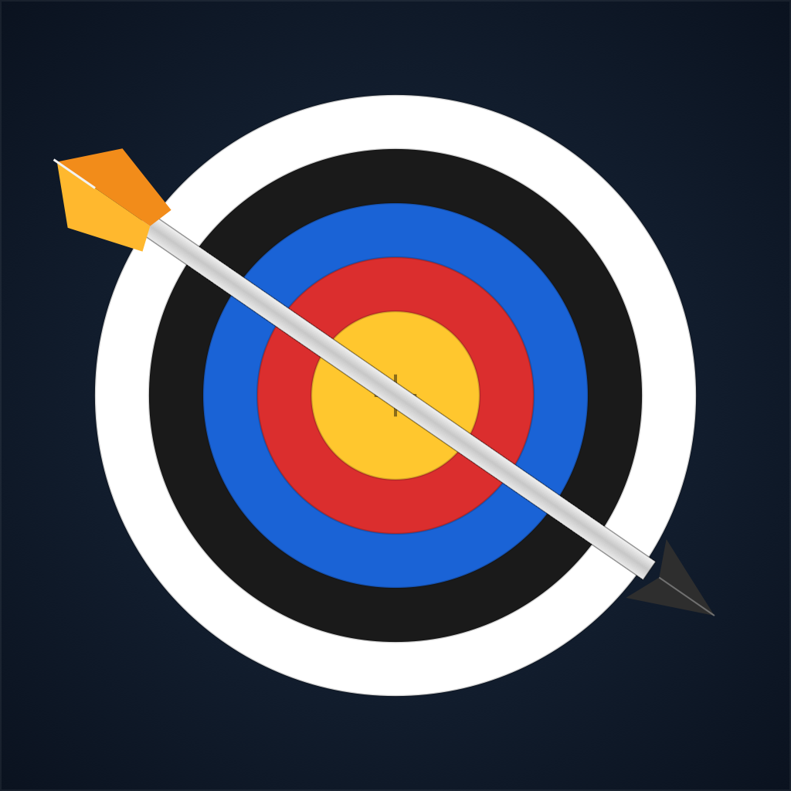
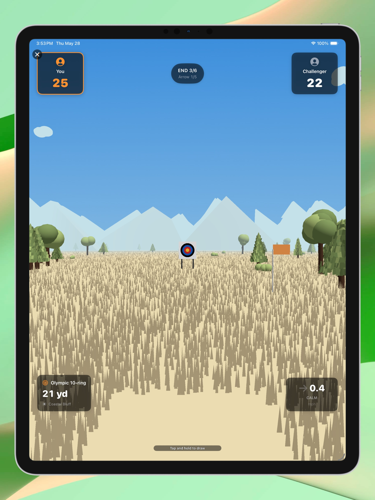
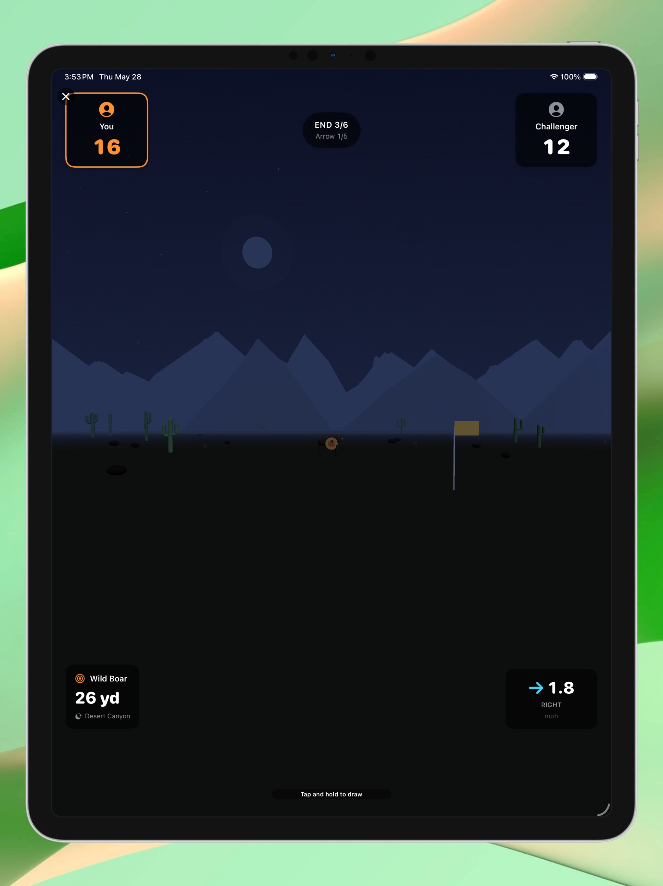
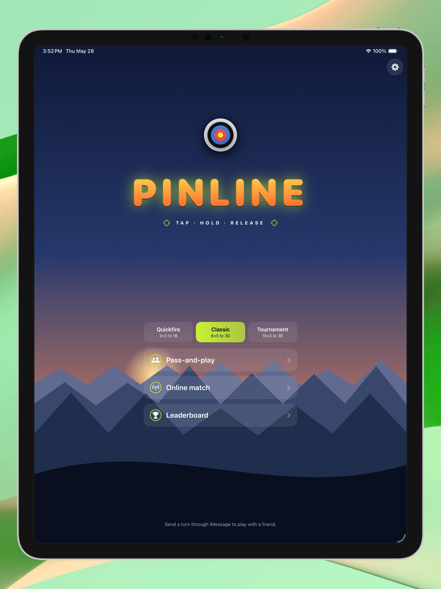
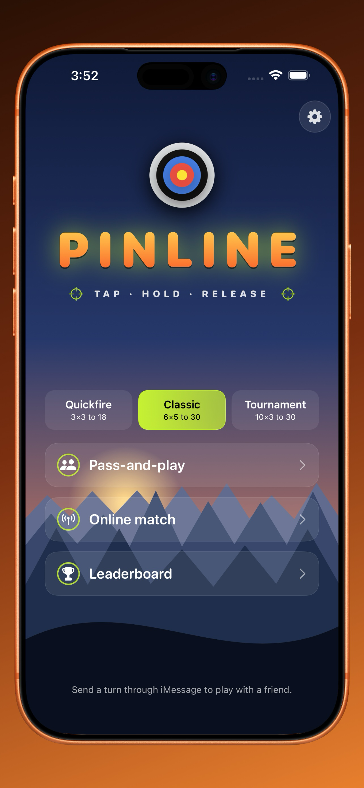
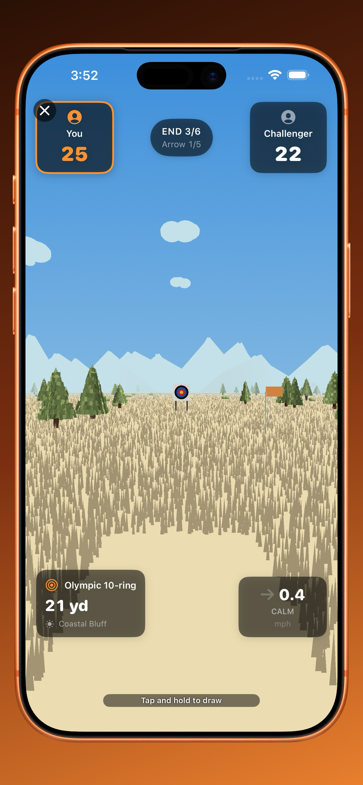
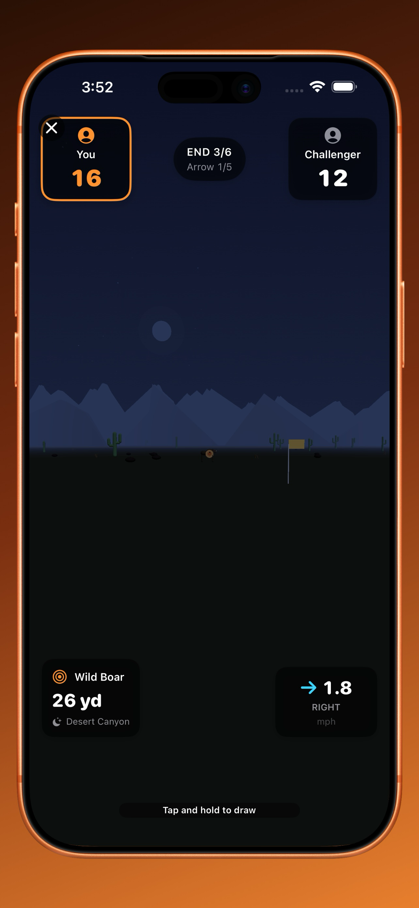
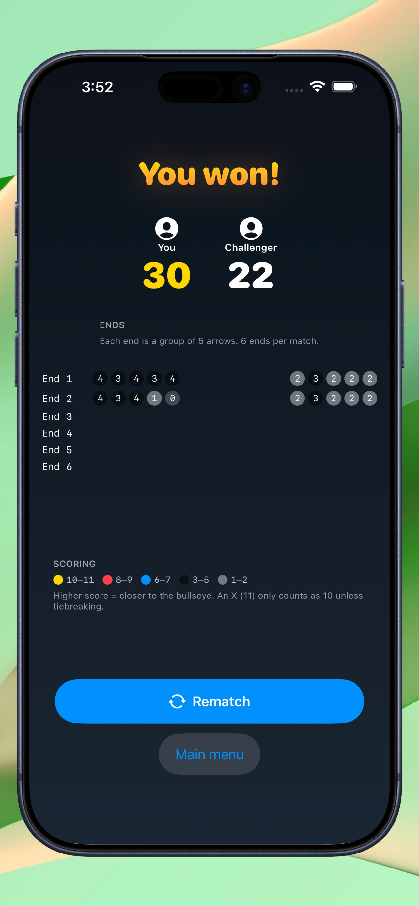

🎯 Pinline
1v1 compound-bow archery built around the things real shooters care about: pin yardages, lateral wind, sway under draw. Pass-and-play on one device, challenge a friend over iMessage, or matchmake on Game Center — every arrow is a fresh turn.

Why Pinline Hits Different
Compound-bow mechanics in your pocket — not just a flappy bird with a quiver
20, 30, 40, 50, 60 yard pins on a fluorescent compound sight. Read the distance, pick your pin, hold steady, release. Wrong pin = wrong elevation, just like the lane.
Wind speed and direction read out live on the HUD. Aim INTO the wind to drift back to the bull. The flag on the lane tells you where it's blowing.
Hold too long at full draw and your pin starts to wander — random anchor, brownian sway, fatigue jerks. Release on the bull or hold for the perfect line. Your call.
Paper Olympic 10-ring for the classic feel, or 3D animal targets — whitetail, turkey, boar — with painted kill zones and proper heart-shot scoring.
Forest, alpine, coastal bluff, desert canyon. Sunrise, noon, sunset, night. Clear, rain, snow. Every match's range is uniquely generated.
Two shooters, one device. Per-arrow handoff screen, per-player bow color, full match without any sign-in friction. Perfect for couch competition.
Send a Pinline bubble to a friend. They open it, take their shot, send it back. Each turn is one arrow. Like Wordle's group chat — but with a compound bow.
Quick-match online or invite a friend. Asynchronous turn-based — your opponent shoots when they're free, you shoot when you're free, push notifications keep you in sync.
Every online win submits to the Pinline wins leaderboard. Climb the global ranks one bubble at a time. Bragging rights included.
Touch and hold to draw the bow — the compound rig rises into shooting position, the camera crunches in to 10° FOV (the actual angular drop between yardage pins), and your fluorescent peep ring glows around the target.
Drag while drawn to fine-tune your aim. The bow's response is laggy on purpose — you're fighting a drawn compound bow, not nudging a cursor. Let go to release.

Distance and target type sit on the lower-left HUD. Wind speed + direction sit on the lower-right with a rotating arrow showing exactly where it's blowing — and a flag on the lane confirms it.
The 20/30/40/50/60-yard pins stack inside a real compound sight. Picking the wrong pin throws the arc — picking the right one and letting the wind push it back to center is the whole game.

Pass-and-play. Hand the phone across the couch. A per-arrow handoff screen shows whose bow is up, in their colour. No sign-in, fully offline.
iMessage. Tap the Pinline iMessage app, send a challenge bubble with a format and target style. Recipient opens, takes one shot, sends the bubble back. Repeat until someone breaks 30.
Game Center. Quick-match or invite — every arrow ends your turn and pushes to your opponent. They get notified, take their shot, push back. Genuinely async.

See It In Action
Compound sights, painted animals, wind on the flag




Got Questions?
Read the distance on the HUD (e.g. "41 yd"). Pick the matching pin on the compound sight by tapping it — there are pins for 20, 30, 40, 50, and 60 yards. Hold the right pin on the target and release. If there's wind, aim INTO the wind so the arrow drifts back to centre.
That's sway — your shooter is human, the bow is heavy, and full draw is exhausting. The longer you hold, the more your aim drifts. Release at the right moment or let the auto-release fire after you overdraw. Quick releases are easier; held releases give you precision but punish hesitation.
Open a conversation in Messages, tap the Pinline iMessage app, pick a format (Quickfire / Classic / Tournament) and target style (Olympic / 3D Animals), then send. Your friend taps the bubble, takes a single arrow, and sends the updated bubble back. Repeat until the match ends. Each arrow is one bubble — like Wordle, but for archers.
Olympic is paper — a 10-ring boss target with concentric scoring rings (10 in the bull, 1 on the edge). 3D Animals rotates between whitetail, turkey, and boar with painted kill zones — heart shot for max points, gut shot for low points, miss for zero. Both modes use the same physics; the targets just look different and have different scoring zones.
Yes — Pass-and-play mode is fully offline. Two shooters, one device, no sign-in. Online (Game Center) and iMessage matches obviously need a connection to relay turns, but everything in-game runs locally.
iPhone and iPad. The game is portrait-only (the SwiftUI peep aperture sizing, FOV crunch, and follow-cam waypoints are tuned for vertical aspect). Built and tuned on iPhone 17 Pro Max; runs smoothly on anything from iPhone 12 forward.
No. Pinline is a one-time purchase. No ads, no tracking, no in-app purchases, no subscriptions. You get the whole game, all modes, all targets, both online flows.
Security & Privacy
No tracking. No ads. No in-app purchases.